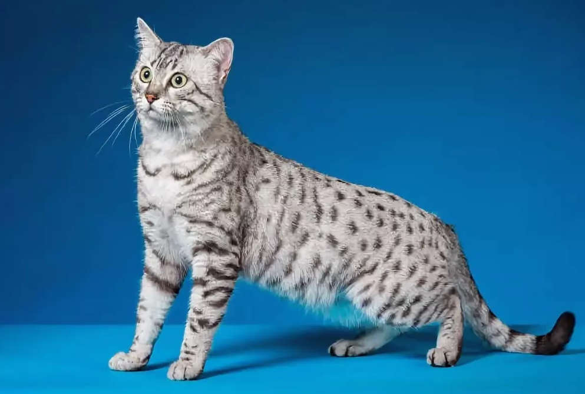

Активный и игривый Мау — идеальный выбор для семей с детьми, и для тех, кто хотел бы завести собаку, но не может за ней ухаживать. Котенок с малых лет усваивает трюки, наслаждается вниманием.
Мау достаточно умен, чтобы не лезть к малышам младшего возраста, но при этом активно играет с подросшими детьми школьного возраста. Именно младшие школьники больше всего напоминают характер самого мау.
Мау почти бесстрашен, но дружелюбен, если вы принесете домой пса, то котенок вряд ли испугается, но тем не менее, старайтесь вводить животное в дом постепенно.